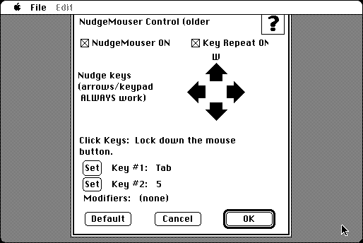

Download
nudgemouser2.zip (33K) NudgeMouser 1.5.1 repackaged into a zipped hfs disk image and checksum file. The disk image can be mounted with Mini vMac.
nudgemouser2.sit.hqx (45K) NudgeMouser 1.5.1 in the original format.
copyright: Paul Sexton
mod date: Nov 18, 1999
license: former shareware, license key free on request
from url :
Shareware
Allows you to move the mouse pointer with the keyboard one pixel at a time, while the mouse button is pressed. Mini vMac must be in Full Screen mode for this to work (to activate the lower level mouse emulation). When tested in System 7.5.5, the "Key Repeat ON" option doesn't work, causing the emulated machine to hang. NudgeMouser 1.5.1 is included with NudgeMouser 2 (the later version doesn't seem to work on a MacPlus).

If you find these downloads useful, please consider helping the Gryphel Project, which hosts them.
Here are the md5 checksums for the downloads, signed with Gryphel Key 5:
--------- GRY SIGNED TEXT --------- 9ee2fdcc58bc3e3e0619615ca90a9e75 nudgemouser2.zip 4e5004407f1063b9a889d428921fe57d nudgemouser2.sit.hqx ------- BEGIN GRY SIGNATURE ------- Gry/4Xa8CFcUzxdN/PgJ0NRi+M/+KgiKoqWBBWPRpGaeKeTo28gw/SXqEpDDX+vu ieB9nXXNqImn/hOFEg7ls4YxvHg9lCvdk37gfz2ypR9pQfb4C4cM6U6FMU1JcauD ltUsX/fOnEObxmCj2ixpwf/VDmHlf48ESYC0sjMxHDZswMgqXRqHYM3VTE1S8vvd -------- END GRY SIGNATURE --------